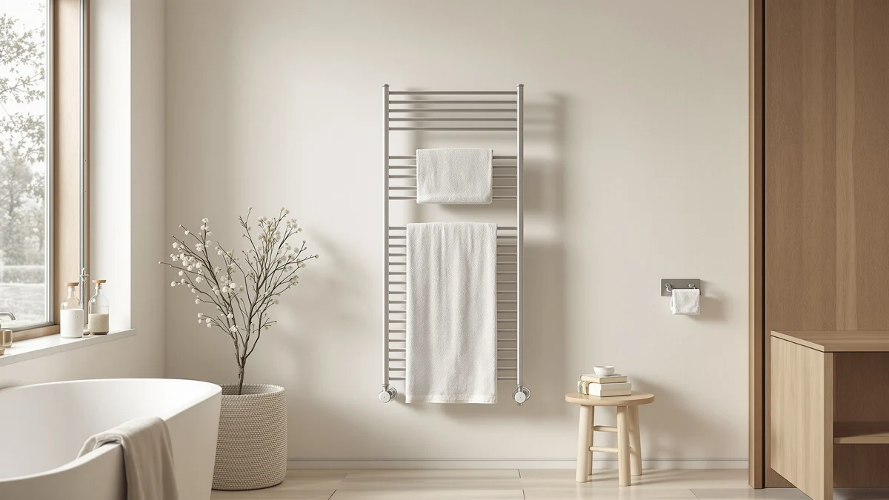

How to Use Towel Warmer Efficiently (2026)
Prices and picks verified as of September 2026. Independent, reader-supported reviews.


Things to Know Before You Buy
- Preheat time is short. Most towel warmers reach full heat in 15 to 30 minutes, so you rarely need to run one longer than the length of your shower.
- Timers do the heavy lifting. A built-in timer, smart plug, or auto shut-off is the single biggest lever for cutting run time and keeping the cost near a dollar a month.
- Placement matters. A warmer set in a cold draft loses heat faster and works harder, so a sheltered spot on an interior wall pays off.
- Towel thickness changes the math. Thick bath towels hold heat longer but take more time to warm, while thin towels heat fast and cool quickly.
Learning how to use towel warmer efficiently comes down to timing and a couple of habits, not a bigger unit or a higher setting. A warm towel after a shower is one of those small comforts that feels far more expensive than it is, and most people either leave the warmer running all day or crank it to full heat out of habit. Both waste power without making the towel any warmer than a well-timed 20-minute preheat would.
The routine below takes about half an hour of hands-off time and costs pennies to run. You preheat only when you need it, load the towel so the whole surface touches the heat, and let a timer handle the rest. Follow the five steps and you get a hot towel every morning while your warmer spends most of the day switched off.
What You'll Need
- Supplies: a clean dry bath towel, a grounded wall outlet or GFCI bathroom socket, and an optional smart plug or outlet timer
- Tools: the towel warmer (bucket or rack) and a kitchen or phone timer
Step 1: Preheat only when you need it
The first rule for how to use a towel warmer efficiently is to treat it like a toaster, not a night light. Switch it on 15 to 20 minutes before you plan to shower and it will be hot by the time you step out. A bucket-style unit takes closer to 20 minutes because it heats the towel through a sealed shell, while an open bar rack warms the outer layers a little faster.
Leaving the warmer on all day does not make the towel any hotter than that 20-minute preheat, and it adds hours of run time you never use. If your mornings run on a schedule, an outlet timer or a smart plug can flip it on for you before the alarm goes off, so you skip the wait entirely and never leave it running by accident.
Step 2: Load the towel for full heat contact
How you load the towel decides how evenly it warms. On a bar rack, drape the towel in a single layer so it spreads across as many heated bars as possible. A towel bunched onto one bar warms only where it touches metal and leaves cold patches everywhere else, which tempts you to run the unit longer to compensate.
With a bucket warmer, fold the towel loosely and let it fill the drum rather than cramming it into a tight ball. Air needs to move around the fabric so heat reaches the inner folds. A packed towel warms on the outside and stays cool in the middle, so a loose fold gets you an evenly hot towel in the same 20 minutes, with no extra run time.
Step 3: Set a timer instead of leaving it on
A timer is the biggest single win for running a towel warmer efficiently. Many units ship with a built-in timer or an auto shut-off that cuts power after 30, 60, or 90 minutes, so the warmer never heats an empty bathroom while you are at work. If yours has that feature, set the shortest window that still gives you a hot towel, usually 30 to 45 minutes.
If your warmer has no timer of its own, a $10 outlet timer or a smart plug does the same job and adds phone or voice control on top. Schedule it to switch on shortly before your usual shower time and off again once you are done. Run a 100-watt warmer two hours a day and you spend under a dollar a month, while the same unit left on around the clock can cost several times that for no extra benefit.
Step 4: Match the setting to the towel and season
Not every towel and every month needs the same heat, and matching the setting to the job keeps your run time down. A thin hand towel or a lightweight summer towel warms through on a low or medium setting, so reaching for maximum heat just burns extra watts and can leave the fabric uncomfortably hot to hold.
Save the highest setting for thick, plush bath towels and cold winter mornings when the bathroom itself is chilly and the towel sheds heat faster. If your model offers only a single heat level, lean on the timer instead: a shorter cycle for thin towels, a slightly longer one when the towel is heavy or the room is cold. Adjusting by season this way trims run time without ever leaving you with a lukewarm towel.
Step 5: Keep it clean and well placed
A clean, well-placed warmer holds heat with less effort, which pays off over the long run. Wipe the bars or the bucket shell with a damp cloth every week or two so dust and lint do not build up and dull the surface. For a bucket unit, follow the maker's descaling advice in hard-water areas, since mineral scale on the heating element makes it work harder to reach the same temperature.
Where you put the warmer matters just as much. Set it against an interior wall and away from a drafty window or an exhaust fan, because a cold cross-breeze pulls heat off the towel as fast as the unit can add it. A sheltered spot lets the warmer reach temperature sooner and hold it longer on a lower setting, which shaves a few minutes and a few watts off every single use.
Common Mistakes to Avoid
The most common mistake that stops people from using a towel warmer efficiently is leaving it on 24/7. It feels convenient, but the unit spends most of the day heating a bathroom nobody is in, and the towel is no hotter than it would be after a timed preheat. A timer or smart plug fixes this in one step.
Loading a wet towel is the next trap. A towel warmer keeps a dry towel warm, so it dries a soaked one slowly and inefficiently while the trapped moisture can breed mildew inside a bucket. Wring the towel out or hang it to dry first, then warm it just before you need it.
People also bunch the towel into a tight wad, which leaves cold spots and pushes them to run the unit longer. Spread it out or fold it loosely so heat reaches every layer. Cranking a thin towel to maximum heat wastes power for no gain, and skipping the occasional wipe-down lets lint and scale build up until the warmer struggles to reach temperature. Finally, parking the warmer under a cold draft undoes half its work, so give it a sheltered spot. Avoid these five habits and your warmer costs pennies to run.
Our Top Picks
The routine works best when the gear does the timing for you. These three picks cover the two things that make a towel warmer efficient: a unit that preheats fast and shuts itself off, and towels that hold the warmth once you pull them out. Here is what we would start with.

Editor’s Pick
COSTWAY 23L Towel Warmer Bucket
The 23-liter drum heats one large towel in about 20 minutes, and the built-in timer with auto shut-off means it turns itself off after every cycle. That combination makes the efficient routine automatic.
$79.99
Check Price on Amazon
Best Value
ORIGINAL KIDS Hooded Bath Towel
A soft, low-cost hooded towel that warms fast and stays cozy on a child. It is the cheap second towel that keeps you from firing up a big unit for one small person.
$15.99
Check Price on Amazon
Premium Choice
IFaryMes Toddler Baby Bath Towel
This plush toddler towel has enough pile to hold heat well after a short warm-up, so it stays warm through drying off a wriggling child. A good match for family bathrooms.
$17.08
Check Price on AmazonHow long does a towel warmer take to heat a towel?
Most plug-in racks and buckets get a towel warm in 15 to 30 minutes from a cold start.
Should I leave a towel warmer on all the time?
You gain little from running it around the clock.
Frequently Asked Questions
How long does a towel warmer take to heat a towel?
Most plug-in racks and buckets get a towel warm in 15 to 30 minutes from a cold start. To use a towel warmer efficiently, start it about 20 minutes before you get in the shower so the towel is ready the moment you step out, rather than leaving it running for hours.
Should I leave a towel warmer on all the time?
You gain little from running it around the clock. A towel warmer only needs 20 to 30 minutes to reach full heat, so a timer or a quick manual switch delivers the same warm towel while a unit left on all day burns power every hour you are not in the bathroom.
How much does it cost to run a towel warmer?
A typical towel warmer draws 60 to 150 watts. Run it two hours a day at the U.S. average of about 17 cents per kilowatt-hour and you spend roughly 60 cents to a dollar a month. A timer that limits it to your actual shower windows keeps the cost near the low end of that range.
Can a towel warmer dry a wet towel?
It can, but slowly, and that is not where it shines. A towel warmer is built to keep a dry towel hot, so drying a soaked one ties the unit up for a long stretch and can trap moisture inside a bucket. Wring or hang the towel first, then warm it just before use for the most efficient result.
Is a bucket warmer or a bar rack more efficient?
Both are efficient when you preheat and use a timer. A bucket warms one towel through a sealed drum and holds heat well, while an open bar rack warms the outer layers faster and can heat two towels at once. Pick the bucket for a single hot towel and the rack when more than one person needs one.
Verdict
Knowing how to use a towel warmer efficiently is mostly about timing and small habits. Preheat for 15 to 20 minutes rather than running the unit all day, and spread the towel so heat reaches every layer. Let a timer or smart plug limit the run to your shower window. Match the heat setting to the towel and the season. Keep the surface clean, and give the warmer a sheltered spot away from drafts. Do that and a 100-watt unit costs under a dollar a month while handing you a hot towel every morning. If you want the routine to run itself, the COSTWAY 23L Towel Warmer Bucket is the one to start with, since its built-in timer and auto shut-off turn the efficient habits into defaults you never have to think about. Pair it with a towel that holds heat, set the schedule once, and you get a hot towel every morning for pennies a day.